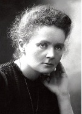

İnsanlar bilim dünyasındaki kadınlardan bahsederken, akıllarına ilk gelen isim Marie Curie (1867-1934) olur. Ve bunun için iyi bir nedenleri vardır. Yalnızca Nobel Ödülü’nü kazanan ilk kadın değil, aynı zamanda iki Nobel Ödülü kazanan da ilk kişidir.

Marie Curie, radyoaktivite üzerine yaptığı araştırmasıyla 1903’te Fizik dalında, ilk Nobel Ödülü’nü kazandı. On yıl öncesinde Paris’te Curie ve beraberindekiler, uranyumun özelliklerini araştırıyorlardı. Curie, uranyumun ahşaptan ve etten geçen ışınlar yaydığını fark etti. Ama merak uyandırıcı bir şekilde, uranyuma ne yaptığı –ısıtması, soğutması veya diğer elementlerle onu birleştirmesi– fark etmeksizin, yayılan ışın miktarının uranyumun kütlesi ile olan ilişkisinin sabit kaldığını gördü. Curie, ışınların yayılmasının veya radyoaktivitenin –onun bulduğu bir terim– atomların bir niteliği olduğu, bir kimyasal tepkimenin ürünü olmadığı sonucuna vardı. Sonrasında Curie, uranyum bakımından zengin olması dolayısıyla “uranyum cevheri” denen madeni incelemeye başladı. Uranyum cevheri, uranyumun tek başına yayabileceğinden çok daha fazla radyasyon yaydı. O ve eşi Pierre Curie, bu cevherde her ikisi de yüksek oranda radyoaktif olan iki yeni element bulmayı başardılar. Bunlardan birine, Marie’nin memleketi olan Polonya’ya ithafen “polonyum” adını verdiler. Diğerinin adıysa Latince “ışın” anlamına gelen “radyum” oldu.
Curie, radyum ve polonyumu keşfetmesinden dolayı 1911’de, bu kez Kimya dalında ikinci bir Nobel Ödülü’ne layık görüldü. Bugüne dek, Linus Pauling (1901-1994) dışında, iki farklı dalda Nobel Ödülü kazanan tek kişidir.
EK BİLGİLER:
1. Marie Curie, yıllarca yoğun radyasyona maruz kaldığı araştırmalarından sonra, 1934’te lösemiden öldü.
2. Marie ve Pierre Curie’nin kızı Irene Joliute-Curie, yapay radyoaktiviteyi keşfetmesinden dolayı 1935’te Kimya dalında Nobel Ödülü’nü kazandı.
3. Torunu, onları dezenfekte edene kadar, Marie Curie’nin notları radyoaktifti.
4. Marie Curie, Paris Sorbonne’da öğretim görevlisi olan ilk kadındı.